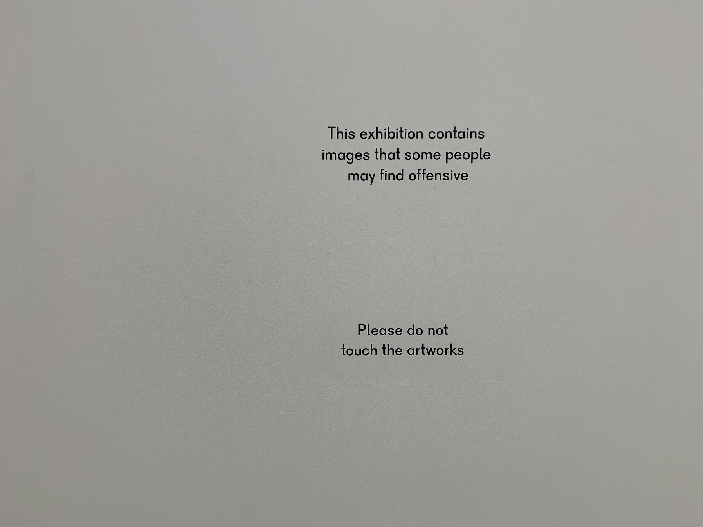
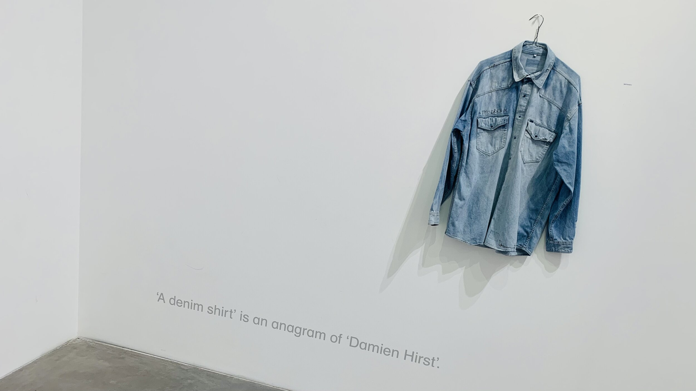
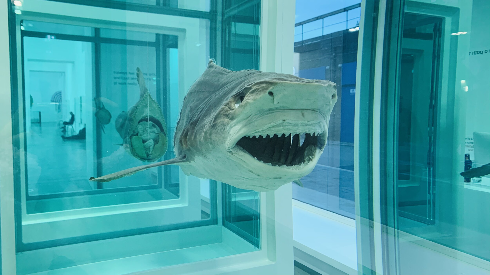
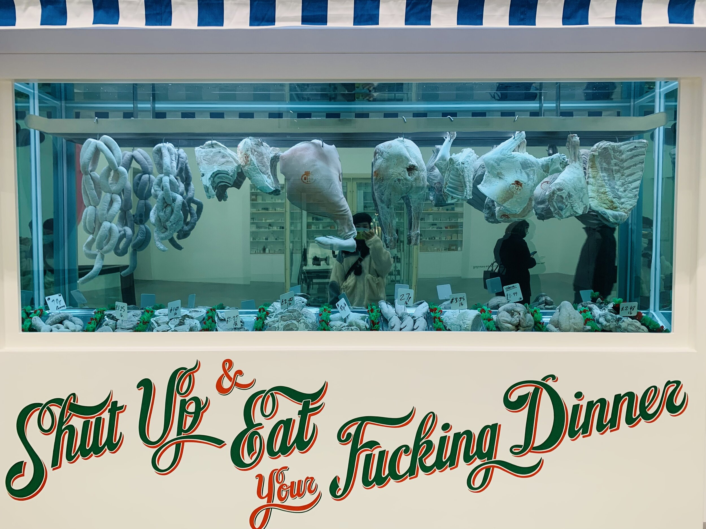
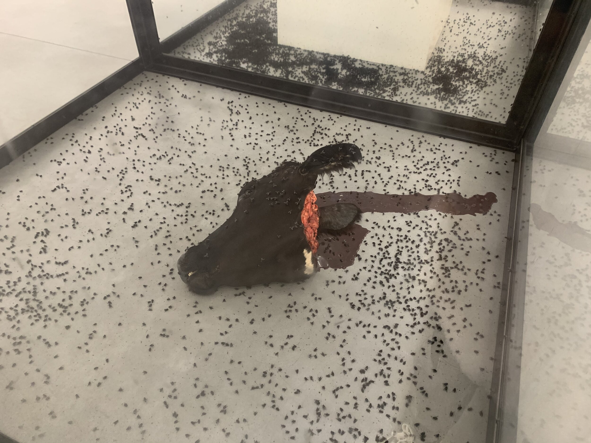
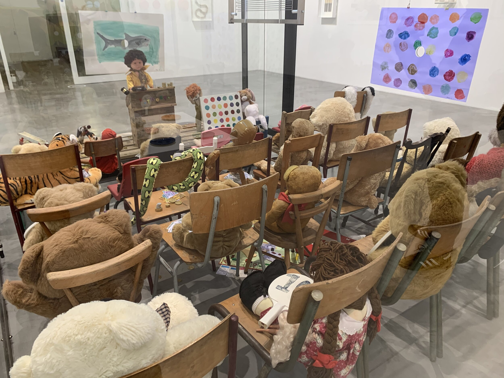
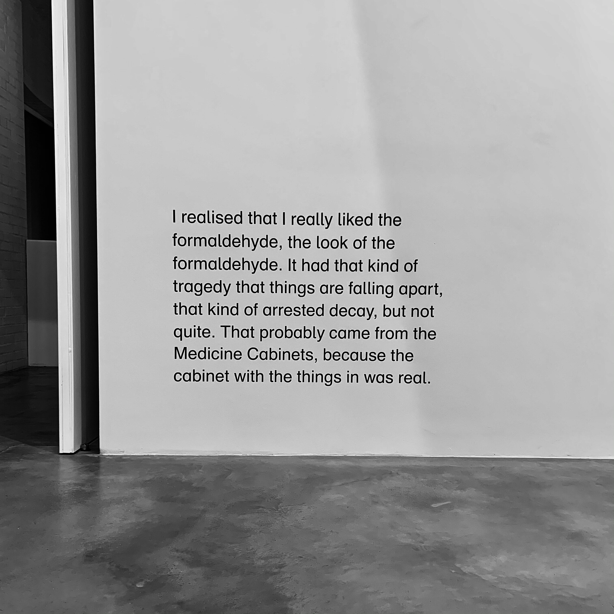
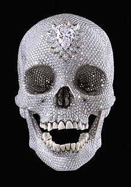

Damien Hirst's exhibition End of a Century is on view at Newport Street Gallery from 7 October 2020 to 7 March 2021. The exhibition showcases his work from the 1980s to the 1990s. I was lucky to see the exhibition with a friend before the London Lockdown.
Born in 1965, Damien Hirst started his art career early when he was still in college. He has been described as 'one of the world's most perverse artists', with a passion for working with corpses and almost all of his work discussing the topic 'death'. He is keen to explore the complex relationship among art, life and death.

Photographed by Sally on December 9,2020
Damien’s artworks have always been controversial. Many people questioned why Damien Hirst could have won the Turner Prize in 1995 for his exhibition Some Went Mad, Some Ran Away (Serpentine Gallery, London, 1994), which included work from his Natural History series like Mother and Child Divided (1993) (cows and calves immersed in formaldehyde). The British Conservative politician Norman Tebbit felt that people had gone mad to give Damien this prize. He thought that Hirst was just showcasing dead animals and it was not fair to thousands of young artists who didn’t have the chance to attend exhibitions because they were creating artworks for ordinary people (Tebbit, 1995). Brian Sewell, the art critic for the London Evening Standard, thought that Hirst’s works didn’t count as art. He thought that simply pickling something and putting it in a glass container made the work art, and it was very despicable (Sewel, 1995).

Photographed by Sally on December 9,2020
Hirst doesn't care at all about the criticism of his work from the outside world and critics, and he remains true to his style. The controversy over his immersion of various animal carcasses in formaldehyde has never ceased. He explained why he liked using this style in his exhibition: "I realized that I really liked the formaldehyde, the look of the formaldehyde. It had that kind of tragedy that things are falling apart, that kind of arrested decay, but not quite."(Hirst,2020)

Figure 1 photographed by Jinming on December 9,2020.
The great controversy about Hirst actually made me more interested in what I was going to see before the exhibition. When I just entered the gallery, I saw one of his most famous works, The Physical Impossibility of Death in the Mind of Someone Living which presenting a shark cut into three parts (see Figure 1), neatly displayed but with a sense of separation. I could feel my own insignificance in front of the huge, open-mouthed shark. The glass tank filled with entrails of different animals also shocked me a lot, and there was even displaying Hirst's mischievous words "shut up & eat your fucking dinner" (see figure 2). Apart from the visual stimulation, the smell of formalin filled my nostrils, and the empty exhibition hall with all those glass tanks of cold animal carcasses made me feel like I was staying in a morgue. Hirst used so much death in his work because he thought it was a good way to look at our own death with less fear by dealing with the death of other objects (Hirst,2007). Ideas about life and death may be as obscure as ever, but when they find a concrete form (the glass tank and the shark) that makes them complete and finished, the ideas become clear (Fuchs, 2010). To be honest, looking at those artworks didn’t reduce my fear of death, but made me think about one interesting thing: would we become so-called artworks when we die? And what would other species view us when they see us displayed in a glass tank filled with formalin?

Figure 2 photographed by Sally on December 9,2020

Figure 3 photographed by Jinming on December 9,2020
Another impressive piece is A Thousand Years (see Figure 3). Two huge glass boxes are connected to each other. The left box contains a severed cow's head with dried and congealed blood on the floor and a fly extinguisher hanging over the cow’s head. The right side has a huge white box on the ground and flies larvae are placed in the box, feeding on the cow's head and then growing, only to be inevitably electrocuted to end their lives. Life and death exist simultaneously in one space and are interdependent. Death, birth and rebirth are happening all the time in the world: the renewal of cells in the human body; the killing of each other between different species .... We are looking at flies, but to put it another way, we can be those flies too. Hirst is obsessed with the process from birth to death. In one interview Hirst once said that he wanted the world to be solid, but it was fluid, and there was nothing one can do about it. He has absolutely no interest in fixing things or controlling them in some way. He tries to demonstrate the moments of death, but he doesn't expect them to be exactly the same on the next day.


Photographed by Sally on December 9,2020
Hirst’s works are with impacting powers. I would like to end this review with the words of Tabish Khan ：“Whether you are disgusted or excited by Hirst, there is no doubt that his art is engaging — and you might not be able to forget the smell of rotting flesh and flies for a long time.”(Khan,2020)
Afterword
Damien Hirst first came to my attention in my language class when my tutor Nigel asked us, "Who do you think is the richest contemporary artist in the UK?" There were many different opinions, and I did a bit of Googling and found Damien Hirst and Nigel then showed us one of his works - a diamond-encrusted skull and told us the name of the work was 'For the Love of God'(see Figure 4). He asked us to describe how we felt when we first saw it. Some say Hirst wants to communicate the chance of a new beginning in the next life. Anyway, different people have different ideas about their work. Hirst says he only wants to celebrate life by cursing death, and he believes that what better way to cover up death than by adopting the symbols of luxury, desire and depravity? What better way to cover up death than by adopting symbols of luxury, lust and depravity?

Figure 4 For the Love of God (2007). Available at: https://en.wikipedia.org/wiki/For_the_Love_of_God (Accessed: 28 December 2020).
Due to the epidemic situation this year, the closure of theatres and museums has given us little opportunity to be there and experience the atmosphere created by the artist, and I am grateful to have been able to see the Damien Hirst‘s exhibition that appeared in the book in London during my study abroad. Although I did not see 'For the Love of God', I hope to see this collection in my lifetime.
Reference
1. Brinck, I., 2017. Empathy, engagement, entrainment: the interaction dynamics of aesthetic experience. Cognitive Processing, 19(2), pp.201-213.
2. HIRST, D., & FUCHS, R. (2010). Cornucopia. London, Other Criteria.
3. Beckett, A., 1996. IS THERE LIFE AFT, ER THE DEAD COW? [online] The Independent. Available at: <https://www.independent.co.uk/arts-entertainment/is-there-life-aft-er-the-dead-cow-1360455.html> [Accessed 28 December 2020].
4. Museum of Fine Arts, Boston. 2020. A Selection Of Works By Damien Hirst From Various Collections. [online] Available at: <https://www.mfa.org/exhibitions/selection-works-damien-hirst-various-collections> [Accessed 28 December 2020].
5. Fuchs, R., 2010. Minimal Baroque And Hymns - Damien Hirst. [online] Damienhirst.com. Available at: <http://damienhirst.com/texts/2010/march--Rudi Fuchs> [Accessed 28 December 2020].
6. Khan, T., 2020. Art Review: Damien Hirst @ Tate Modern. [online] Londonist. Available at: <https://londonist.com/2012/04/art-review-damien-hirst-tate-modern> [Accessed 28 December 2020].